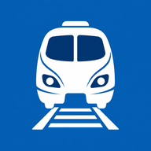

Trains Between Stations

Train No. / Train NameLive Station
Your Search History
आपकी हाल की खोज यहाँ दिखाई देंगी।
ट्रेन खोज के नतीजे
RAILRADAR • LIVE
ट्रेन अपने शुरुआती स्टेशन से जिस तारीख को चली, वह चुनें।
आगमन
स्टेशन / प्लेटफॉर्म
प्रस्थान
ट्रेन की लाइव लोकेशन
ट्रेन के वर्तमान spot पर ऐप का ट्रेन आइकन दिखाया जाएगा।
मैप आ रहा है…
📍 ट्रेन आइकन = वर्तमान live position / स्टेशन के पास होने पर वही spot दिखेगा।
RailRadar का पूरा मैप खोलें ↗कोच और सीटों की बनावट
सेवा से मिला blueprint; सीट उपलब्धता नहीं। वास्तविक रेक में बदलाव संभव है।
Live Station
अगले 4 घंटे
सेटिंग्स
ट्रेन पेज खुला होने पर अपडेट होता है। API सीमा आने पर कुछ देर रुकता है।
सर्वर कनेक्शन
Rail Traffic • संस्करण 10.0 • यह भारतीय रेलवे का आधिकारिक ऐप नहीं है।